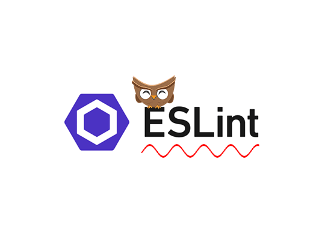
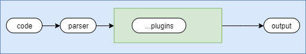

阅读本文你可以了解到
1.前端工程化中代码规范的重要性
2.Eslint的基本概念
3.项目中的配置和IDE的配置等
4.Eslint的基本原理
讲个简短的故事(纯属虚构)
程序员每天都跟代码打交道，你写的代码，就像女孩子的脸一样，是给人看的。女孩子都会在脸上化化妆，
让自己变得更加漂亮，而我们写的代码也要有条理，规范。这样别人就觉得这个人也很有程序员的素养
不仅如此，一个团队中，如果各有各的代码规范，很容易就会出现沟通上的问题，而且同一代码规范有助于
在写代码的时候就发现出错的存在，减少bug的数量。在大型团队合作的时候，良好的代码规范就显得格外重要了
在技术层面上因为公司团队的业务可能不尽相同。技术栈也可能不太同一，这时候更应该注重代码的规范了。
前端开源社区中也是百花争鸣，衍生出又JSLint,JSHint,ESlint,TSLint等等。
因为TSLint是专门解析TypeScript，官方团队而且也宣布放弃维护，转向开发ESLint了
JSLint的灵活性几乎为0，要全盘接受JSLint的建议，并且全部是warning，给开发者不太灵活的开发体验。
JSHint与JSLint相比较之下，更友好，也更容易配置。但是因为是基于JSLint的开发的，原有的问题就继承下来，不容易扩展，不直接提示错误位置
ESLint初衷就是为了能让开发者能自定义自己rules,并且提供一套完善的插件系统。

使用Eslint
//全局
$sudo npm install eslint -g
//项目
$sudo npm install eslint -d
在项目中新建.eslintrc.js文件。
$sudo touch .eslintrc.js
module.exports = {
// env声明你使用的环境 例如 node,browser。
env: {},
// 这是对已经写好的插件进行继承，例如JSstandard标准和Airbnb标准等
extends: [],
// 可以自定义明确知道哪些变量是跳过检测 例如$ (jQuery)
globals: {},
// 使用什么解析器进行解析 babel/typescript
parser: "",
// 编译器选项
parserOptions: {},
// 扩展eslint的功能的插件，例如prettier
plugins: [],
// 假如extends标准的你不喜欢，可以通过rule进行覆盖
rules: {}
};
Standard标准是开箱即用的，内置有格式化代码的工具，所以直接格式化的即可，
Airbnb就没有内置格式化工具，通常都会搭配Prettier进行使用。并且Airbnb对React的支持友好。$sudo touch prettier.config.js
module.exports = {
// 一行最多 100 字符
printWidth: 100,
// 使用 4 个空格缩进
tabWidth: 4,
// 不使用缩进符，而使用空格
useTabs: false,
// 行尾需要有分号
semi: false,
// 使用单引号
singleQuote: true,
// 对象的 key 仅在必要时用引号
quoteProps: 'as-needed',
// jsx 不使用单引号，而使用双引号
jsxSingleQuote: false,
// 末尾不需要逗号
trailingComma: 'none',
// 大括号内的首尾需要空格
bracketSpacing: true,
// jsx 标签的反尖括号需要换行
jsxBracketSameLine: false,
// 箭头函数，只有一个参数的时候，也需要括号
arrowParens: 'always',
// 每个文件格式化的范围是文件的全部内容
rangeStart: 0,
rangeEnd: Infinity,
// 不需要写文件开头的 @prettier
requirePragma: false,
// 不需要自动在文件开头插入 @prettier
insertPragma: false,
// 使用默认的折行标准
proseWrap: 'preserve',
// 根据显示样式决定 html 要不要折行
htmlWhitespaceSensitivity: 'css',
// 换行符使用 lf
endOfLine: 'lf'
}设置工作区中的setting文件
{
"editor.formatOnSave": true,
"editor.defaultFormatter": "esbenp.prettier-vscode",
"eslint.validate": [
"javascript",
"javascriptreact",
{
"language": "vue",
"autoFix": true
},
{
"language": "typescript",
"autoFix": true
},
{
"language": "typescriptreact",
"autoFix": true
}
],
}在webpack中运用,loader或者是preloader都可以
module: {
// 使用loader
loaders: [
...
{
test: /\.(js|jsx)$/,
exclude: /node_modules/,
loader: 'eslint-loader'
}
...
// preLoader 都可以
preLoaders: [
{
test: /\.(js|jsx)$/,
exclude: /node_modules/,
loader: 'eslint-loader',
},
],
...
},
一张简单的图描述一下Eslint整个工作的过程

ESLint利用的是将JS代码转换为抽象语法树，然后进行静态分析的方法，最后定位到问题的所在。
ESLint关键的是rule，顾名思义，就是匹配的规则，这个规则可能是多条，也可能是单条。
匹配完以后有三个选项，0 = error,1 = warn, 2 = off
rules: {
"no-console": 0, // 假如是有console的 就报error
"no-unused-vars": 1, // 定义的变量没有使用就 warning
}
ESLint是通过espree来解析JS代码，生成抽象语法树。AST提供很多规则可以选中特定的代码片段
// no-console.js
module.exports = {
meta:{
...
scheme :[] // 这里是匹配的规则
...
},
// 描述这条 rule匹配了之后要怎么做，怎么去分析代码
create:(context)=>{
// 判断名字里面是否存在console
function isConsole(reference) {
const id = reference.identifier;
return id && id.name === "console";
}
}
}